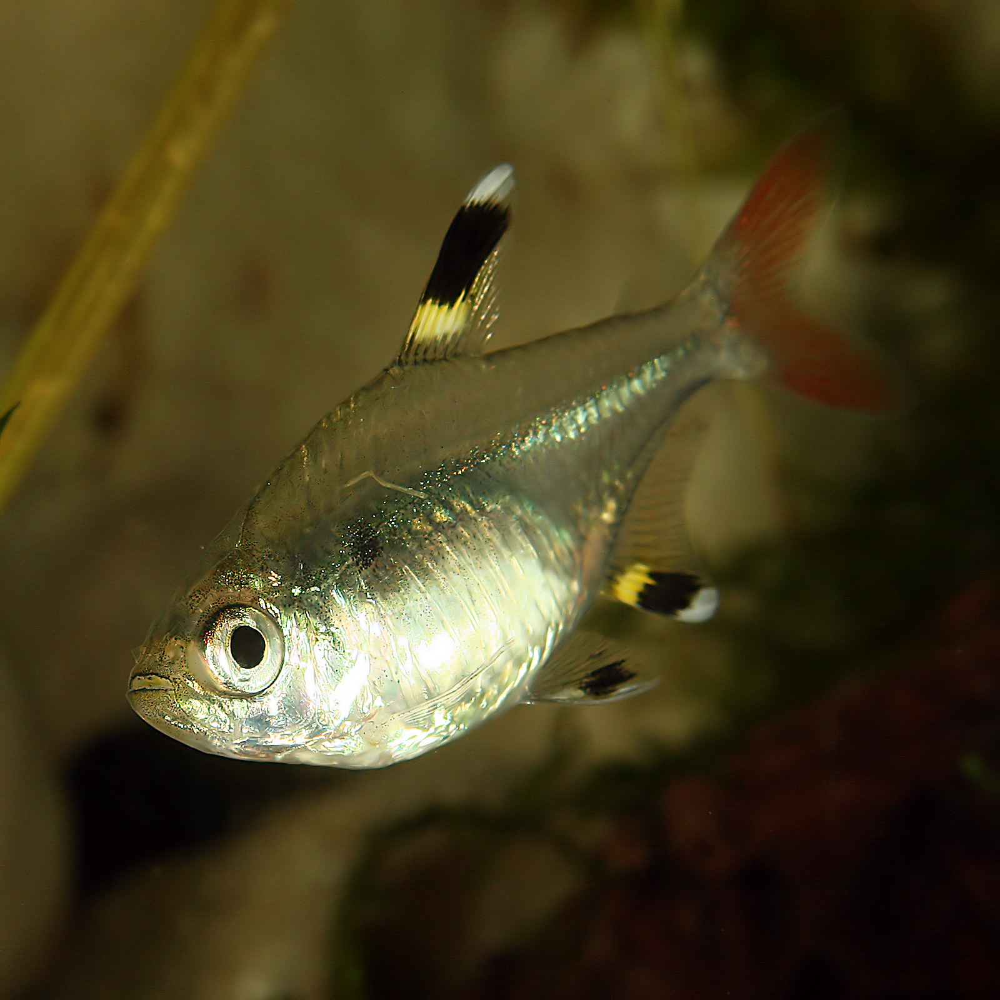

Favicon  Author: — Richard Bartz, Munich Makro Freak Source: — Own work (Wikimedia) License: — Creative Commons Attribution-Share Alike 2.5 Generic license Modifications: — Background Removed, Cropped, Converted to ICO File Format Ascii Art Generated: — Text to Ascii Generator